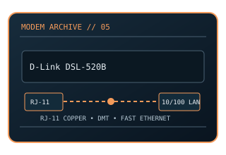

[ MODEL-SPECIFIC NETWORK HARDWARE ]
D-Link DSL-520B ADSL2+ Ethernet Modem
ADSL2+ copper-line modem with a single 10/100 Ethernet customer connection. This static record documents the modem-side line technology separately from its host interface and provider-dependent service rate.

MODEL IDENTIFICATION: Match the exact model number and hardware revision on the device label. Similar names, regional SKUs and provider-branded variants may have different ports, firmware, modulation or driver support.
Exact specifications and compatibility
| Cataloged model | D-Link DSL-520B ADSL2+ Ethernet Modem |
|---|---|
| Dedicated subcategory | Modems and line-termination devices |
| Modulation / line protocol | ADSL/ADSL2/ADSL2+ (ITU-T G.992.1 / G.992.3 / G.992.5 modes); RJ-11 telephone-pair input; DMT modulation for ADSL, ADSL2 and ADSL2+ modes supported by the selected revision and DSLAM profile. |
| Line / physical interfaces | RJ-11 telephone-pair input; DMT modulation for ADSL, ADSL2 and ADSL2+ modes supported by the selected revision and DSLAM profile. |
| Nominal data rate | ADSL2+ supports up to 24 Mb/s downstream; upstream is profile/Annex-dependent (up to roughly 1 Mb/s for common Annex A deployments). Actual sync is loop- and provider-dependent. |
| Bus / host interface | RJ-11 DSL line; 1 × 10/100BASE-T RJ-45 Ethernet host port. |
| Operating-system compatibility | Ethernet management and host use do not need an OS-specific DSL driver; configure the device and PPP/IP settings with the supported browser/host stack. Confirm exact DSL-520B hardware revision and regional firmware. |
| Driver / firmware notes | D-Link sold regional/revision variants under this model family. Use the label and revision-specific manual; many contemporary provider networks have retired ADSL service. |
| Wi-Fi / switching | No Wi-Fi access point or Ethernet switching function is cataloged for this modem. |
Model-specific notes
D-Link sold regional/revision variants under this model family. Use the label and revision-specific manual; many contemporary provider networks have retired ADSL service. Nominal signaling rates are standards/model ceilings rather than specimen test results or a promise of ISP throughput.
Manufacturer, archive and standards references
- Internet Archive catalog copy of the DSL-520B user manualArchived model-specific guide or software documentation for identification and legacy host details.
- D-Link manufacturer support and downloadsManufacturer source; confirm regional SKU, revision and present support status.
- ITU-T Recommendation G.992.5 — ADSL2+Standards reference for the relevant line/modem signaling family; implementation and ISP profile remain model-specific.
Check manufacturer and provider support for the exact region, revision, line profile, firmware and host OS before deployment.